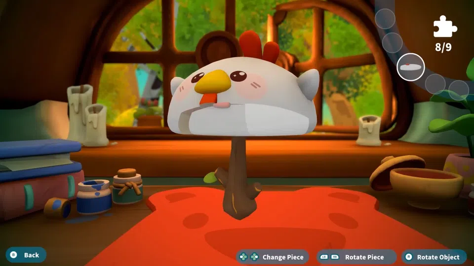
A cozy game where you repair broken items for cute forest animals! Responsible for implementing various gameplay, UI, input handling, animation, shaders, VFX, optimisation, and adding story-related content.
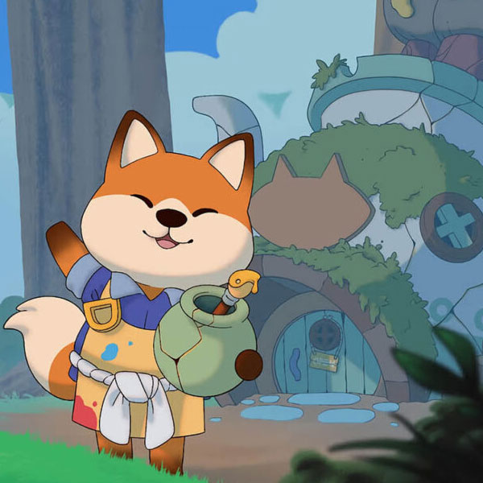
A project ported from ActionScript to Unity in C#. Implemented character movement, collision detection and resolution, input handling and management, and tools used to speed up development.
A spooky platformer about a boy looking for his mum. Find out how uncovering true feelings can bring you home. A project developed with Weronika Jaworska in the Godot Engine for the Global Game Jam 2026.
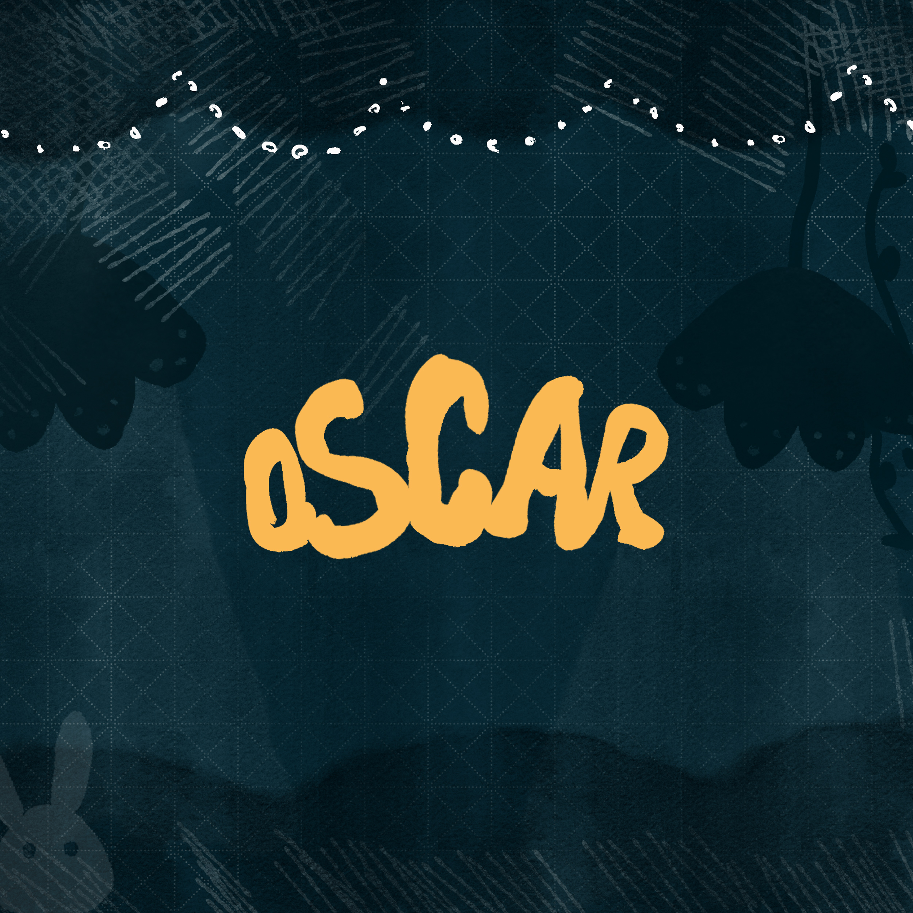
A solo project written in C++ using SDL2, which implements a falling-sand style of cellular automata with physics provided by Box2D. It includes a graphical interface with Dear ImGUI and basic terrain generation utilising FastNoiseLite.
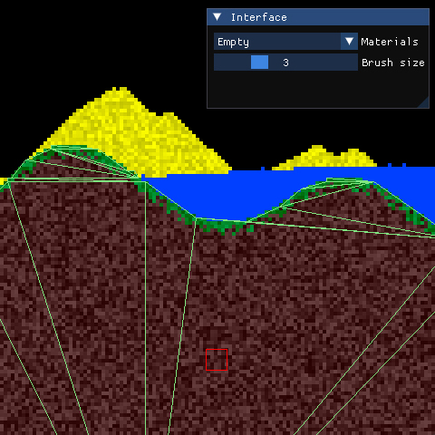
A horror game set in a strange car park. A solo project made within 72 hours for the Ludum Dare 54 Game Jam.
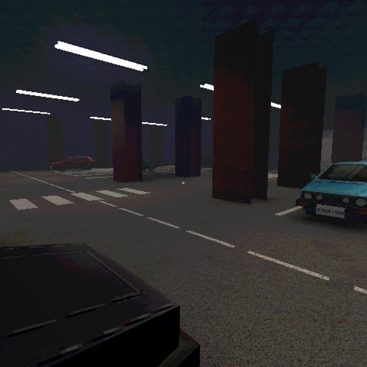
A rogue-lite about escaping the sewers! A project developed with Weronika Jaworska in the Godot Engine. Responsible for programming, composition, sound design, and assisted with the art and animation.
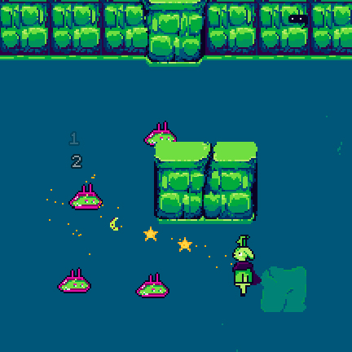
A puzzle game developed by a small team for the Global Game Jam 2022. Responsible for developing the game concept, implementing movement, 3D modelling, composition, and sound design.
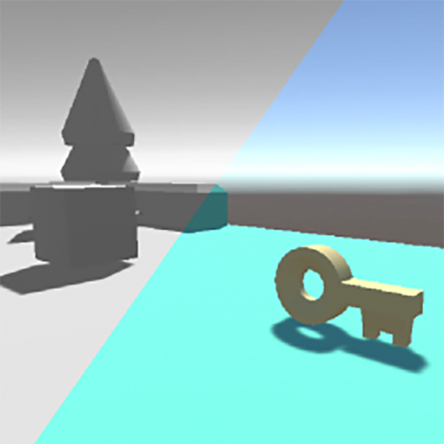
A team-based, online multiplayer FPS developed by a large team in Unity. Responsible for sourcing, designing and implementating audio using FMOD and C#.
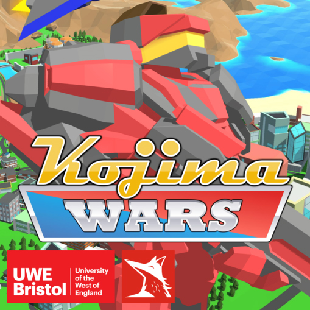
A voxel engine built in Unity used for observing various voxel optimisation techniques.
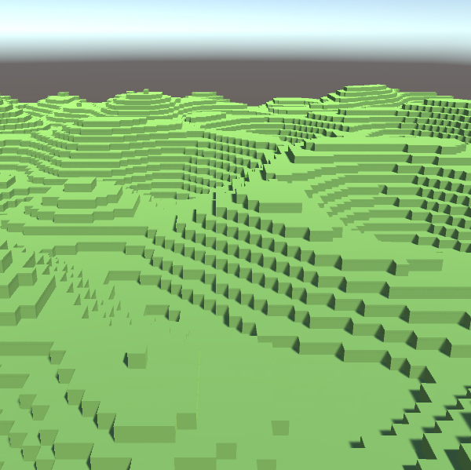
A retro-style FPS written in C++ using DirectX 11.
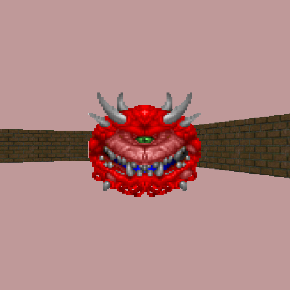
A SHMUP game engine written in C++ using DirectX 11 and developed by a small team. Responsible for writing the parser used to store level data.
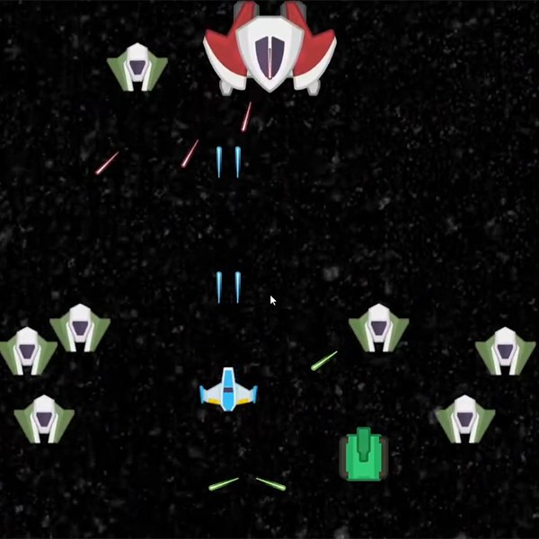
A co-op, top-down shooter written in C++ and developed by a small team. Responsible for writing the parser to process level data from the Tiled map editor.
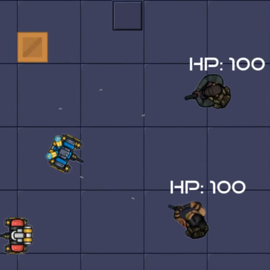
A Minecraft clone created in Unity, and the inspiration for my voxel optimisation project.
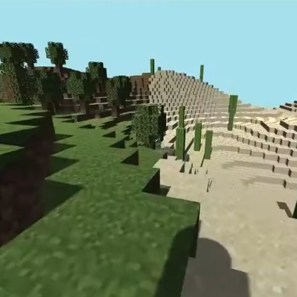